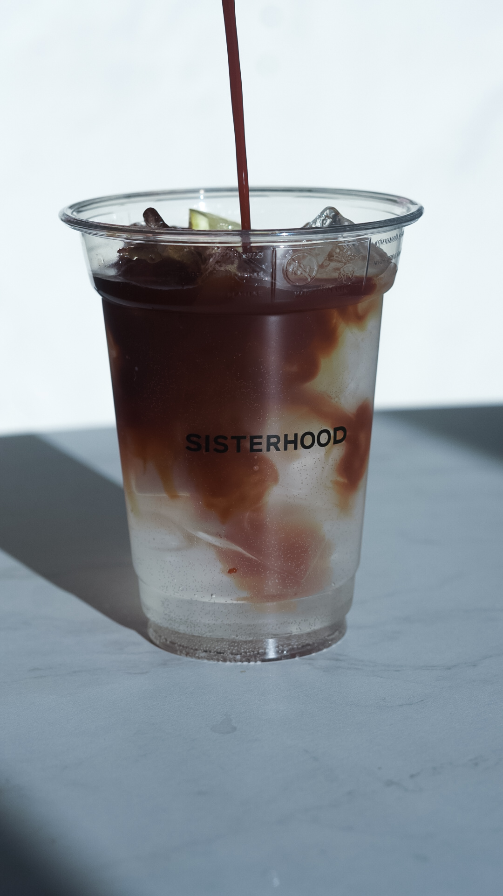

COFFEE TONIC

Coffee Tonic to orzeźwiający napój, który łączy w sobie intensywne
espresso z tonikiem, tworząc wyjątkowe połączenie smakowe.
Charakteryzuje się harmonijnym połączeniem intensywności kawy
espresso z lekką słodyczą toniku oraz świeżością cytrusowych nut. To
doskonały wybór na letnie dni, oferujący energizujące doznania
kawowe w lekkiej i orzeźwiającej formie.